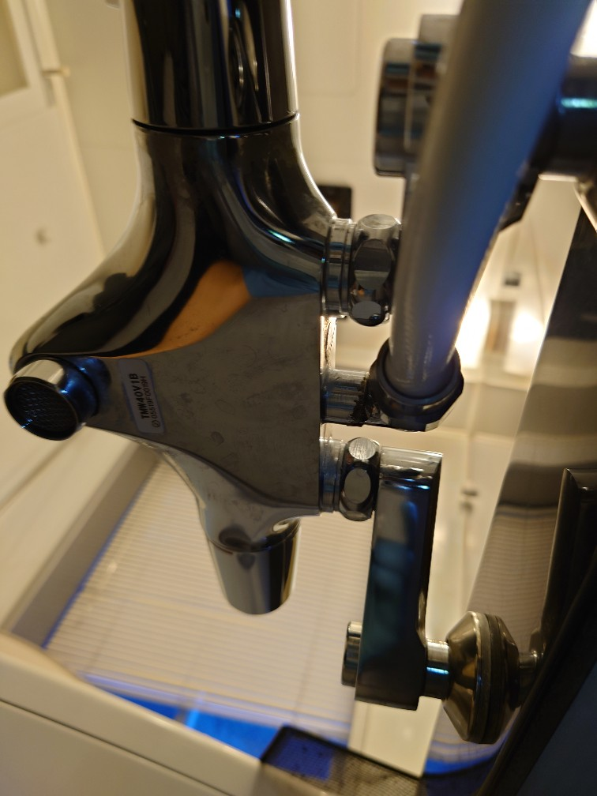
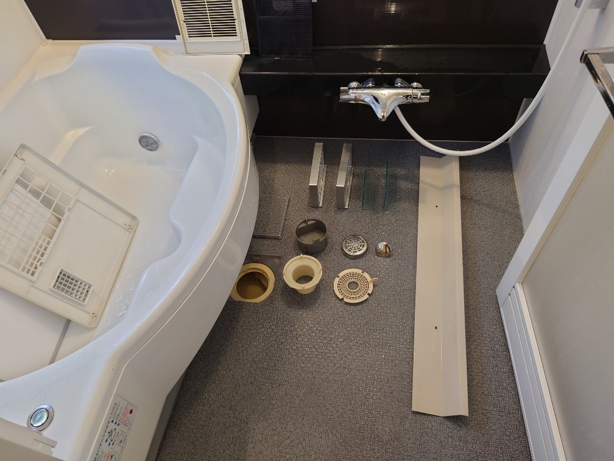
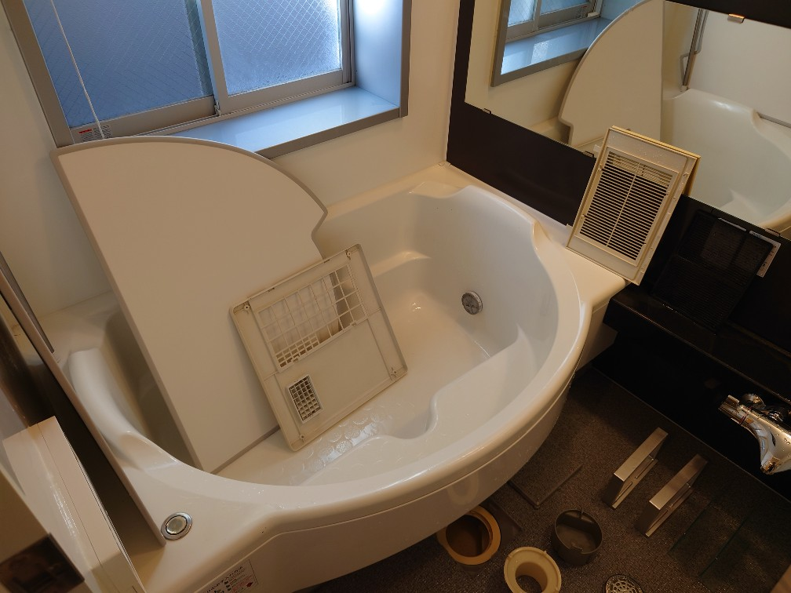

DAIZENメソッドの凄さ🌱浴室プロフェショナルクリーニングの風景（判りますでしょうか？）このアングルでクリーニングを実施するレベルなのです!



DAIZENメソッドを用いたプロフェショナルクリーニングの一コマです。浴室蛇口の裏側写真をご覧下さい。このアングルでこの蛇口の裏側がピカピカに光り輝く状態が写っております。この蛇口裏側を創り出すためには、ヘッドライトをして完全に蛇口の裏側に天井を向いて寝そべって分解洗浄クリーニングを行う必要が有ります、必ずそこまで的確に実施するレベルなのです。ぜひDAIZENメソッドを用いたプロフェショナルクリーニングをお試し下さい、宜しくお願いいたします!